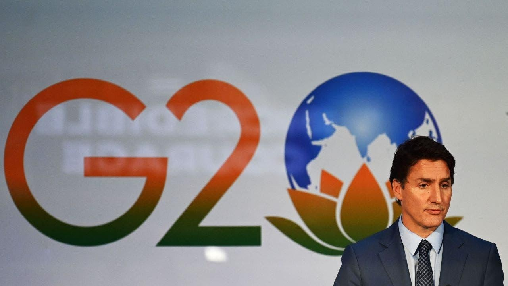

Canadian PM Justin Trudeau reportedly stuck in India after G20 summit due to aircraft issueCanadian Prime Minister Justin Trudeau is currently stuck in India after his aircraft experienced a technical issue, according to his office. Trudeau was attempting to leave India on Sunday after the Group of 20 summit in New Delhi when the Canadian Armed Forces discovered a mechanical issue, CTV News reported. "Upon our departure for the airport, we were made aware by the Canadian Armed Forces that CFC001 was experiencing technical issues," Trudeau's office said in a statement obtained by CTV News. The Sunday night departure was then rescheduled to Tuesday afternoon at the earliest, according to the BBC. The entire Canadian delegation was also stranded in India. "These issues are not fixable overnight, our delegation will be staying in India until alternate arrangements are made," Trudeau's office added. During the G20 conference, Indian Prime Minister Narendra Modi reportedly scolded Trudeau over anti-Indian protests by Sikh separatists in Canada. In June, the Canadian government allowed the protestors to have a parade with a float depicting the assassination of Indian Prime Minister Indira Gandhi by her Sikh bodyguards. "They are promoting secessionism and inciting violence against Indian diplomats, damaging diplomatic premises and threatening the Indian community in Canada and their places of worship," Modi reportedly said in a statement. Fox News Digital reached out to Trudeau's office for a statement, but has not received a response. Reuters contributed to this report. |
 |